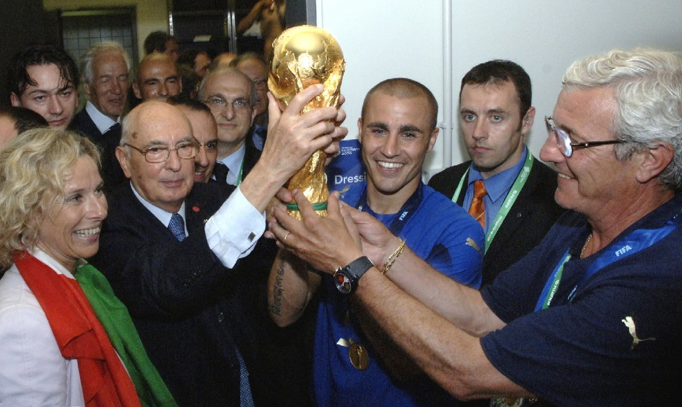

Футбол — командный вид спорта, в котором целью является забить мяч в ворота соперника ногами или другими частями тела (кроме рук)
большее количество раз, чем команда соперника. В настоящее время самый популярный и массовый вид спорта в мире. В XIX веке футбол в Англии приобрёл
популярность, сравнимую с крикетом. В него играли в основном в колледжах. В некоторых колледжах правила разрешали ведение и передачу мяча руками, в
других это, напротив, запрещалось. Первая попытка создать единые правила была предпринята в 1846 году, когда встретились представители нескольких
колледжей. Они установили первый свод правил. В 1857 году был основан первый специализированный футбольный клуб — «Шеффилд». В 1863 году после долгих
переговоров был принят свод правил Футбольной Ассоциации Англии. Также были приняты размеры поля и ворот. А в 1871 году был основан Кубок Англии —
старейший футбольный турнир в мире. В 1891 году было принято правило о пенальти. Но сначала пенальти билось не с точки, а с линии, которая так же, как
и сейчас, находилась на расстоянии 11 метров от ворот.
Есть 17 официальных правил игры, каждое из которых содержит список оговорок и руководящих принципов. Эти правила предназначены для применения
на всех уровнях футбола, хотя есть некоторые изменения для таких групп, как юниоры, взрослые, женщины и люди с ограниченными физическими возможностями.
Законы очень часто формулировались в общих чертах, которые позволяют упростить их применения в зависимости от характера игры. Правила игры публикуются
в ФИФА, но поддерживаются Международным советом футбольных ассоциаций (IFAB).
Каждая команда состоит максимум из одиннадцати игроков (без учёта запасных), один из которых должен быть вратарём. Правила неофициальных соревнований
могут уменьшить количество игроков, максимум до 7.